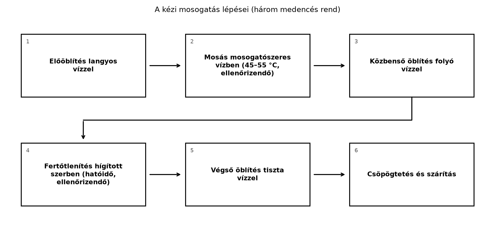
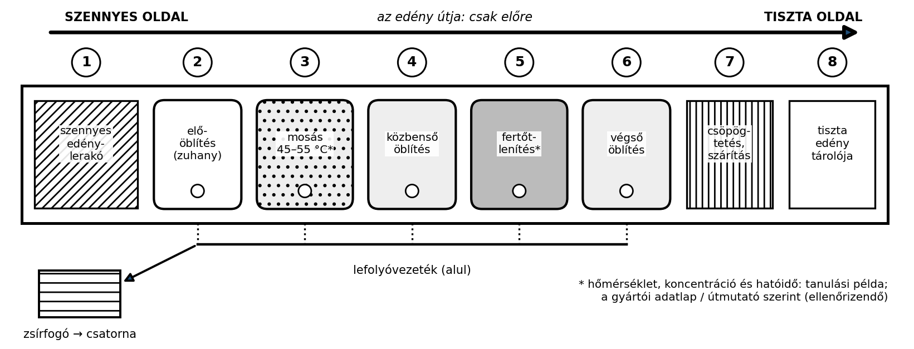

Vége a műszaknak, de a vajkrém nyomait az acélhabverőn csak langyos vízzel mosod le. Reggelre a maradék krém a habverő bordái között megszáradt, sárgás filmréteget alkot. Amikor a következő adag fehérjét habosítod, az „tiszta” habverőd az előző napi zsiradékot és a benne felszaporodó baktériumokat is keveri az édes masszába. A takarítás és fertőtlenítés nem kényelem kérdése: ez az utolsó védvonal a vendég egészsége és a vállalkozás hírneve előtt.
Két edény áll a mosogató mellett. Az elsőben forró, mosogatószeres víz: itt oldódik le a cukor, a fehérje és a zsiradék. A másodikban hígított fertőtlenítőszer: ebbe meríted a tiszta, leöblített eszközt, és a gyártó által megadott hatóidőig ott hagyod. Utána tiszta vízzel öblíted, és csöpögtetőrácson szárítod. A sorrendet nem lehet felcserélni: a szennyezett felületen a fertőtlenítőszer sem hat, a fertőtlenítőszer pedig önmagában nem mosogat.
Definíció. A tisztítás a látható szennyeződés – ételmaradék, zsiradék, cukor, por – eltávolítása vízzel, felületaktív tisztítószerrel és mechanikai munkával. A fertőtlenítés a tisztítást követő külön lépés, amely a felületen maradt, láthatatlan mikroorganizmusokat csökkenti a biztonságos szintre.
Szabály. Tisztítás nélkül nincs hatékony fertőtlenítés. A fertőtlenítőszerek a fehérje- és zsírréteg alatt nem érik el a baktériumokat. A sorrend mindig: előöblítés → tisztítás → öblítés → fertőtlenítés → végső öblítés → szárítás.
Szabály. A fertőtlenítőszer kiválasztásánál négy adatot kell ismerned: - hatóanyag: például nátrium-hipoklorit, kvaterner ammóniumvegyület, alkohol, perecetsav; - behatási koncentráció: például aktív klór (ellenőrizendő: gyártói adatlap); - behatási idő (hatóidő): például (ellenőrizendő: gyártói adatlap); - alkalmazási hőmérséklet és felület: élelmiszerrel érintkező, korrózióálló, leöblítendő.
Higiénia. Az élelmiszerrel érintkező felületekhez csak élelmiszeripari felhasználásra engedélyezett tisztító- és fertőtlenítőszereket szabad használni. A nem engedélyezett háztartási vegyszerek színezéket, illatanyagot vagy maradékot hagyhatnak a késztermékben.
Jogszabály. Az EU élelmiszer-higiéniai rendelete (852/2004/EK) előírja, hogy az élelmiszer-vállalkozónak megfelelő takarítási és fertőtlenítési eljárásokat kell kidolgoznia, alkalmaznia és dokumentálnia. A Magyarországi GHP-útmutatók és a NÉBIH ajánlásai részletesen leírják a vendéglátó- és cukrászüzemek takarítási rendjét. (ellenőrizendő: a hatályos útmutató pontos címe és pontjai.)
Jogszabály. A hulladékot úgy kell tárolni, hogy ne szennyezze az élelmiszert, a használt olajat pedig az arra engedéllyel rendelkező gyűjtőnek kell átadni. (ellenőrizendő: a hatályos hulladékgazdálkodási előírások.)
A HACCP-dokumentáció részeként minden cukrászüzemben legyen írásos takarítási-fertőtlenítési terv. Ez nem bonyolult: egy táblázat, amely megadja, mit, mivel, mikor, hogyan, ki és hogyan ellenőrzi.
| Zóna, eszköz | Gyakoriság | Tisztítószer | Fertőtlenítőszer és hatóidő | Felelős | Ellenőrzés |
|---|---|---|---|---|---|
| Munkafelületek, deszkák | műszak végén, szennyezéskor | zsíroldó, forró víz | klór, (ellenőrizendő) | kijelölt cukrász | érzékszervi, napi lap |
| Habverő fejek, keverőtálak | használat után | mosogatószer | hőkezelés mosogatógépben vagy vegyszeres fertőtlenítés | kijelölt cukrász | napi lap |
| Nyomózsákok, habzsákok | használat után | kifordítva mosás | forró víz vagy fertőtlenítő oldat, szárítás | kijelölt cukrász | kiszáradás ellenőrzése |
| Fagylaltgép, csővezetékek | napi szétbontás után | zsíroldó, kefe | gyártói szer, hatóidő, öblítés | gépet kezelő dolgozó | bejegyzés a géplapon |
| Hűtők, fagyasztók | hetente | enyhe mosogatószer | fertőtlenítő, szagtalanítás | raktáros | penész- és szagellenőrzés |
| Padló | naponta, szennyezéskor | zsíroldó, súrolás | fertőtlenítőszer a lefolyókban | takarító | csúszásmentesség |
Megjegyzés. A konkrét koncentrációkat, hőfokokat és hatóidőket a felhasznált szer gyártói adatlapjáról kell kiolvasni; a fenti értékek tanulási példák.
A cukrászüzemben a fertőtlenítőszert tömény koncentrátumból hígítják. Rossz hígítás esetén vagy nem hatékony, vagy maradékot hagy a felületen.
Számítás. Hány milliliter -os nátrium-hipoklorit törzsoldat kell aktív klórtartalmú oldat készítéséhez? (.)
Adott: törzsoldat
,
azaz
aktív klór
oldatban; cél
;
.
Keresett:
ml.
A céloldatban szükséges aktív klór tömege:
A törzsoldatban van -ben, tehát -hoz , -hoz:
Ellenőrzés: törzsoldat aktív klórt tartalmaz, ezt -re hígítva . ∎
Számítás. Hány milliliter mosogatószer-koncentrátum kell -os mosogatólé készítéséhez?
Adott: céloldat
,
koncentráció
(azaz
oldatban
koncentrátum).
Keresett:
ml.
Ellenőrzés: koncentrátum -ben éppen . ∎
Megjegyzés. Soha ne keverj különböző tisztítószereket – a hipoklorit és savas tisztítószer keveréke mérgező klórgázt fejleszthet.
Az alábbi táblázat az 5 %-os törzsoldatból szükséges mennyiséget mutatja néhány gyakori térfogatra és koncentrációra (). A HTML-kiadás kalkulátorában ppm- és %-os célkoncentrációval is számolhatsz; az előbeállítások a fenti példákat és a feladatokat adják vissza.
A cukrászműhely legnagyobb tisztítási kockázata a sok kis, nehezen elérhető felület: habverő-bordák, nyomózsák belső varrata, fagylaltgép csőcsatlakozása, keverőlapát tömítése.
Szabály. A gépek tisztítása előtt mindig: 1. állítsd le a gépet; 2. húzd ki a hálózati csatlakozót vagy kapcsold le az áramkört; 3. várd meg, amíg minden mozgó rész megáll; 4. a védőburkolatot csak a tisztításhoz, a gyártói utasítás szerint vedd le, és a tisztítás után azonnal szereld vissza.
Biztonsági korlát. A gépi tisztítás tanműhelyi vagy üzemi környezetben, oktatás után és felügyelet mellett végezhető. Feszültség alatt lévő gépet vízzel locsolni tilos.
Eljárás. Napi zárási tisztítási rend egy cukrászműhelyre.
| Szer | Felhasználási koncentráció | Mennyiség (egy műszakra) | Megjegyzés |
|---|---|---|---|
| Zsíroldó tisztítószer | (ellenőrizendő) | oldat | meleg vízben |
| Nátrium-hipoklorit törzsoldat | aktív klór (ellenőrizendő) | törzsoldat vízhez | frissen keverve |
| Mosogatószer | koncentrátum vízhez | kézi mosogatáshoz |
Higiénia. A nyomózsákot mindig kifordítva mosd, mert a belső varratokban krém és cukor maradhat. A kifordított zsákot szárítsd úgy, hogy a belső felület is levegőzni tudjon; nedvesen összecsukva penészedhet.
A habfúvó (tejszínhab-szifon) tisztítása szétbontással kezdődik: nyomásmentesítés után a fej, a szelep, a tömítőgyűrű és a díszítőcsőr külön mosandó, mert a rajzon sraffozott részekben marad a krém.
A cukrászüzemben megkülönböztetünk:
Definíció. Fekete mosogatás: a szennyezett oldal zsíros, ételmaradékos, nyersanyagos (pl. tojásos) edényeinek, sütőlemezeinek, üstjeinek mosogatása. Fehér mosogatás: a tiszta oldal eszközeinek (kikészítő tálak, habzsákok, díszítőeszközök), vendéglátásban az étkezési edényeknek a mosogatása. A takarítóeszközöket (felmosó, vödör, padlókefe) egyik mosogatóban sem szabad mosni; ezekre külön kiöntő és tároló szolgál. A két mosogatót és a hozzá tartozó keféket soha ne cseréld fel.
Szabály. A kézi mosogatás három medencés rendje: 1. medence – mosás mosogatószeres meleg vízben; 2. medence – fertőtlenítés; 3. medence – öblítés tiszta ivóvízzel. Ezt előöblítés (a durva szennyeződés eltávolítása) előzi meg, és csöpögtetés/szárítás követi (ellenőrizendő: NÉBIH-útmutató). A teljes lépéssor:


Az ábra a fenti hat lépést térben mutatja: balról a szennyes edény lerakója és az előöblítés, majd a mosó, a közbenső öblítő, a fertőtlenítő és a végső öblítő medence, a csöpögtető és a tiszta edények tárolója. Az edény csak előre halad; a lefolyóvíz zsírfogón át jut a csatornába.
Mosogatógép. A gépi mosogatás akkor hatékony, ha a gép hőfoka és a program megfelelő. A mosási ciklus jellemzően -on történik, az öblítés pedig feletti hőmérséklettel fertőtlenít. (ellenőrizendő: gépkönyv és hatályos útmutató) A szűrőt naponta tisztítani kell, mert az ételmaradék visszaforog a mosogatóvízbe.
A cukrászműhely hulladékai két nagy csoportba sorolhatók:
Definíció. Kommunális hulladék: a nem veszélyes, háztartásihoz hasonló hulladék (papírtörlő, élelmiszer-maradék, csomagolás maradványa). Veszélyes hulladék: például használt vegyszeres flakon, lejárt tisztítószer, bizonyos fénycsövek, elemek. A használt sütőolaj és étolaj különleges kezelést igényel.
Szabály. A műhelyben szelektíven gyűjtsd legalább: - a papírt és kartont; - a műanyag csomagolást; - az üveget; - a fémdobozokat; - az élelmiszer-hulladékot.
A szerves élelmiszer-hulladékot zárható, fedeles edényben tárold, és naponta ürítsd. A fedél nélküli, szabadon álló hulladék vonzza a gyümölcslegyeket, csótányokat és rágcsálókat.
Szabály. A használt olajat soha ne öntsd a lefolyóba. Gyűjtsd külön, lezárt, erre a célra feliratozott kannában, és engedéllyel rendelkező gyűjtőnek add át. A lefolyóba öntött olaj a csövekben megszilárdul, dugulást és bűzt okoz.
Kártevőmegelőzés. A takarítás és a hulladékkezelés egyben kártevő-megelőzés. A rágcsálók és rovarok akkor telepednek meg, ha élelmet, vizet és búvóhelyet találnak. A napi takarítás, a hulladék zárása, a felesleges dobozok eltávolítása, a repedések kijavítása és a raktár száraz, hűvös tartása megfosztja őket az életterüktől.
Gyakorlat. Készíts takarítási-fertőtlenítési tervet és hajtsd végre a napi zárási tisztítást.
Cél: a tanuló elsajátítsa a tisztítás → fertőtlenítés sorrendjét, a fertőtlenítőszer hígítását, és a gépek biztonságos tisztítását.
Eszközök és anyagok: a fenti technológiai lap szerint, plusz aktívklór-tesztcsík (pl. 0–500 ppm skálával) a fertőtlenítő oldat koncentrációjának ellenőrzésére (ellenőrizendő: a szer gyártója által ajánlott teszt), takarítási napló.
Higiéniai munkakezdés: munkaruha, hajháló, ékszerek levétele, kézmosás; sérült bőrfelületet vízhatlan kötéssel fedd le.
Biztonsági korlát. A gyakorlat üzemi környezetben, oktató felügyelete mellett végezhető. A gépek áramtalanítása kötelező. A tisztítószerek használatánál gumikesztyű és védőszemüveg szükséges.
Technológiai lap. A fenti „Napi zárási tisztítási rend” technológiai lap számozott lépései szerint dolgozz. A hígítást előre számítsd ki, és mérőedénnyel mérd be.
Ellenőrzési pontok: - a fertőtlenítőszer koncentrációja megfelel-e a címkén megadottnak; - a hatóidőt mérte-e az óra vagy homokóra; - a felület leöblítése után nincs-e klórszag vagy csúszós maradék; - a gépek szétbontott részei maradéktalanul visszakerültek-e.
Dokumentálás: töltsd ki a takarítási naplót: dátum, időpont, a kijelölt terület, a felhasznált szerek és hígításuk, az ellenőrzés eredménye, aláírás.
A takarítás minőségét érzékszervi és egyszerű fizikai vizsgálatokkal ellenőrizheted:
| Vizsgálat | Jó eredmény | Rossz eredmény |
|---|---|---|
| Látható szennyezettség | nincs folt, lerakódás | ragacsos, zsíros felület |
| Szag | nincs savanyú, dohos szag | kellemetlen, penészes szag |
| Ujjlenyomat-próba | száraz, sima felület | zsíros, nedves |
| Klórteszt | a szer hígítása a gyártói tartományban van (ellenőrizendő) | túl híg vagy túl tömény |
| Dokumentum | hiánytalan, olvasható | hiányzó bejegyzés, olvashatatlan aláírás |
A HACCP-naplóban a takarítási terv teljesülését is rögzítik. A hiányzó bejegyzés a hatósági ellenőrzésen súlyos hibaként értékelhető (ellenőrizendő: a hatóság gyakorlata).
Hiba. Fertőtlenítőszer-szag a habverőn vagy a formán. Ok: a végső öblítés maradt el, vagy túl tömény oldatot használtak. Megelőzés: a hígítást mérőedénnyel végezd, és a hatóidő után mindig öblíts.
Hiba. A mosogatógépből kivett poharak szürke, foltos felületűek. Ok: a szűrő tele van, a víz nem elég forró, vagy a regeneráló só hiányzik. Megelőzés: naponta tisztítsd a szűrőt, ellenőrizd a gép hőmérséklet-kijelzését.
Hiba. A fagylaltgép tömítése alatt fekete penészfolt jelenik meg. Ok: a gépet nem bontották szét napi tisztításkor, a tömítés nedves maradt. Megelőzés: a tömítést kiemelve mosd, szárítsd, és csak szárazon szereld vissza.
Hiba. Élelmiszer-allergiás vendég reakciója annak ellenére, hogy a termék receptúrája tiszta. Ok: a közös habverő vagy nyomózsák allergénmaradékot vitt át. Megelőzés: színkódolt, allergénspecifikus eszközök használata, és a tisztítási tervben az allergénmentes termékek eszközeinek külön mosogatása.
Egy cukrászüzemben a reggeli műszakban a dolgozó habfúvóval készített tejszínhabot. Délután ugyanazzal a habfúvóval diómentes desszertet díszített. Reggel azonban mogyoró- (mogyorós praliné) pasztás tejszínhabot is készített vele, a habfúvót előtte csak kiöblítette, a praliné-maradék a fej belső részén maradt. A dióféle-allergiás vendég enyhe reakcióval kereste fel az üzletet. Az üzemvezető utólag ellenőrizte a takarítási naplót: a habfúvó napi szétszedése nem volt bejegyezve. Az intézkedés: új takarítási utasítás, a habfúvó minden egyes tejszínhab-adag után szétszedve és fertőtlenítve, allergénváltás előtt teljes szétszedés, mosás, fertőtlenítés és dokumentálás, allergénmentes termékekhez külön eszköz. (Esettanulmány, tanulási példa.)
Továbbvitt eredmény. Az itt bemutatott takarítási-fertőtlenítési terv, a fertőtlenítőszer hígítási számítás és a gépek tisztítási utasításai a HACCP-rendszer dokumentációjának alapkövei lesznek a HACCP a cukrászatban: CCP-k, hőmérsékletnapló és helyesbítő tevékenység alfejezetben.
Megoldások – önellenőrzés: a válaszok a feladatok megoldásai között, az „Önellenőrzés – válaszok” résznél.
1. feladat (A)
Sorold be a következő műveleteket: tisztítás vagy fertőtlenítés?
a) A deszkát meleg mosogatószeres vízzel súrolod.
b) A deszkát
klóroldattal átkened.
c) A mosogatógép
-os
öblítést végez.
2. feladat (A)
Váltsd át:
hány
?
3. feladat (B)
A takarításhoz
-os
zsíroldó oldatot kell készíteni
-ben.
Hány ml koncentrált zsíroldót mérj ki?
4. feladat (B)
Készíts takarítási tervet egy munkaállomásra (táblázatban):
munkafelület, habverő, nyomózsák, hűtő. Add meg a gyakoriságot, a
tisztítószert, a fertőtlenítőt, a felelőst és az ellenőrzést.
5. feladat (C)
Elemezd az alábbi esetet: a mosogatógépből kivett eszközök fehér, krétás
bevonatot kaptak. Mi lehet az ok? Hogyan igazolod a feltételezést, és
mit javítasz?
6. feladat (D)
Végezd el otthoni gyakorlatként egy edény vagy kézi habverő teljes
takarítását és fertőtlenítését: mérd ki a hígítást, számold a hatóidőt,
öblíts, száríts, és vezess rövid naplót.
Önellenőrzés – válaszok 1. Igaz. A fertőtlenítőszer csak a tiszta felületen éri el a mikroorganizmusokat; a szennyező réteg védi őket. 2. Előöblítés → mosás → közbenső öblítés → fertőtlenítés → végső öblítés → csöpögtetés/szárítás. 3. . (Számítás: aktív klór; az -os oldat -e -ot tartalmaz, így .) 4. Mert a csövekben megszilárdul, dugulást okoz, és élővízbe kerülve szennyez. 5. Fekete: a szennyezett oldal zsíros, ételmaradékos, tojásos edényei; fehér: a tiszta oldal eszközei (kikészítő tálak, habzsákok), vendéglátásban a vendégtéri edények. A takarítóeszközöket egyikben sem mossuk; a két rendszert külön kell tartani. 6. Állj le → áramtalaníts → várd meg a megállást → bontsd szét → tisztíts → öblíts → fertőtleníts → öblíts → száríts → szereld vissza.
1. feladat megoldása (A)
a) tisztítás, b) fertőtlenítés, c) fertőtlenítés (hővel).
2. feladat megoldása (A)
.
3. feladat megoldása (B)
=
.
.
Ellenőrzés:
.
Tehát
koncentrátumot kell
-re
hígítani.
4. feladat megoldása (B)
Például:
| Zóna | Gyakoriság | Tisztítószer | Fertőtlenítőszer | Felelős | Ellenőrzés |
|---|---|---|---|---|---|
| Munkafelület | műszak végén | zsíroldó | klór, | cukrász | érzékszervi, napló |
| Habverő | használat után | mosogatószer | hő vagy vegyszer | cukrász | napi lap |
| Nyomózsák | használat után | kifordítva mosogatószer | forró víz | cukrász | szárazság |
| Hűtő | hetente | enyhe mosogatószer | fertőtlenítő, szagtalanítás | raktáros | penész, szag |
5. feladat megoldása (C)
Fehér, krétás bevonat a mosogatógépben általában vízkő vagy rosszul
oldott mosogatószer-maradvány. Feltételezés: a vízlágyító só hiánya vagy
a gép vízkeménység-beállítása rossz. Ellenőrzés: nézd meg a gép
sótartályát, kérdezd a vízkeménységet, vizsgáld meg a poharat ecetes
oldattal – ha a bevonat feloldódik, vízkő. Javítás: só feltöltése,
megfelelő regeneráló program, szükség esetén szakember.
6. feladat megoldása (D)
A gyakorlati végrehajtás értékelési szempontjai: a hígítás kiszámítása
pontos, a sorrend betartott, a hatóidőt mérted, az öblítés után nem
maradt szag, a napló hiánytalan. Várt eredmény: makulátlan, száraz
eszköz.
A takarítás és fertőtlenítés a cukrászüzemben a HACCP-rendszer mindennapi gyakorlata. A tisztítás fizikai és kémiai módon eltávolítja a látható szennyeződést; a fertőtlenítés ezt követően csökkenti a mikroorganizmusok számát. A két lépést soha nem lehet összevonni. A fertőtlenítőszert a gyártói adatlap szerint kell hígítani: a leggyakoribb számítás a koncentráció és a térfogat szorzata (). A gépek tisztítása előtt kötelező az áramtalanítás, a szétbontott alkatrészeket külön kell mosni, öblíteni, fertőtleníteni és szárítani. A kézi mosogatás három medencés (háromfázisú): mosás, fertőtlenítés, öblítés; előöblítés előzi meg, csöpögtetés-szárítás követi. A hulladékot fedett edényben gyűjtsd, a használt olajat engedélyezett gyűjtőnek add át. Az allergének keresztszennyeződését színkódolt eszközökkel és külön mosogatással kerüld el. A takarítási-fertőtlenítési terv a HACCP dokumentáció része, amelyet a HACCP a cukrászatban: CCP-k, hőmérsékletnapló és helyesbítő tevékenység alfejezetben építünk tovább.